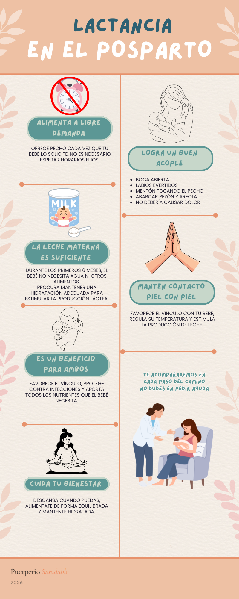

Módulo 01 · Guía práctica
Lactancia materna
Orientaciones para extraer y conservar leche materna, reconocer complicaciones, encontrar posiciones cómodas y acompañar el crecimiento del recién nacido.

Extracción de leche materna
¿Cuándo puede ser útil extraer leche?
La extracción de leche materna puede ayudar en distintas situaciones:
- Cuando la madre debe separarse temporalmente de su bebé.
- Para mantener la producción de leche.
- Cuando existe congestión mamaria.
- Para alimentar a un recién nacido prematuro o con dificultades para succionar.
- Cuando la madre retorna al trabajo o estudios.
La extracción de leche materna puede realizarse para mantener la producción de leche en caso de separación madre-hijo, aliviar la congestión mamaria, alimentar al niño cuando presenta dificultades para mamar o cuando la madre se reintegra al trabajo. (Manual de Lactancia Materna, MINSAL)
Antes de comenzar
Para favorecer una extracción más cómoda y efectiva:
- Busca un lugar tranquilo y limpio.
- Lava tus manos con agua y jabón.
- Siéntate cómodamente.
- Ten a mano los recipientes donde almacenarás la leche.
- Intenta relajarte pensando en tu bebé o mirando una fotografía.
Busca un lugar tranquilo y limpio. Lávate las manos. Siéntate cómoda. (Manual Operativo de Lactancia Materna, MINSAL)
¿Cómo extraer leche?
Extracción manual
- Lava tus manos.
- Coloca el pulgar por encima de la areola y los dedos por debajo formando una letra “C”.
- Presiona suavemente hacia el tórax.
- Comprime y libera de manera rítmica.
- Repite alrededor de toda la mama.
La extracción manual es una técnica que toda madre debería conocer, ya que no requiere equipamiento y puede utilizarse en cualquier momento.
Este tipo de técnica se debe enseñar a todas las madres. (Manual de Lactancia Materna, MINSAL)
Extracción con sacaleches
Puede realizarse con extractores manuales o eléctricos.
Antes de comenzar se recomienda realizar un masaje suave en la mama para favorecer la eyección de leche.
La extracción es una habilidad que irás aprendiendo, no te desanimes si las primeras veces sacas poco volumen. (Manual Operativo de Lactancia Materna, MINSAL)
Consejos importantes
- Lo extraído no refleja necesariamente la cantidad de leche que produces.
- La cantidad obtenida suele aumentar con la práctica.
- Mientras más frecuentemente se extraiga leche, mayor será el estímulo para seguir produciendo.
No hay mejor extractor que tu propio hijo. (Manual Operativo de Lactancia Materna, MINSAL)
Higiene del extractor
Después de cada uso:
- Desarma todas las piezas.
- Lava con agua y detergente suave.
- Enjuaga cuidadosamente.
- Deja secar al aire o con toalla de papel limpia.
Los extractores son de uso personal y no se deben compartir. (Manual Operativo de Lactancia Materna, MINSAL)
Almacenamiento de la leche materna extraída
¿Cómo almacenar la leche materna?
La leche materna extraída debe almacenarse en recipientes limpios y bien cerrados. Se recomienda utilizar:
- Frascos de vidrio con tapa.
- Recipientes de plástico libres de BPA.
- Bolsas diseñadas específicamente para almacenar leche materna.
La leche materna se puede almacenar, en orden de preferencia, en contenedores de vidrio limpios con tapa, contenedores de plástico libres de BPA y bolsas diseñadas específicamente para almacenar leche materna. (Manual Operativo de Lactancia Materna, MINSAL)
Recomendaciones antes de guardar la leche
- Etiqueta cada recipiente con la fecha de extracción.
- Guarda la leche en pequeñas cantidades (50-100 mL).
- Utiliza primero la leche más antigua.
- No almacenes la leche en la puerta del refrigerador.
Etiquetar los recipientes de leche con la fecha de la extracción y guardarlos en orden de manera de descongelar siempre la leche más antigua. (Manual Operativo de Lactancia Materna, MINSAL)
¿Cuánto dura la leche materna?
| Lugar de almacenamiento | Temperatura | Duración |
|---|---|---|
| Temperatura ambiente | Hasta 25 °C | 6-8 horas |
| Cooler con hielo | -15 °C a 4 °C | 24 horas |
| Refrigerador | 4 °C | 5 días |
| Congelador de refrigerador con 1 puerta | -15 °C | 2 semanas |
| Congelador de refrigerador con 2 puertas | -18 °C | 3-6 meses |
| Congelador independiente | -20 °C | 6-12 meses |
Fuente: Manual Operativo de Lactancia Materna, MINSAL.
¿Cómo transportar la leche?
- Mantén la cadena de frío.
- Utiliza un bolso térmico o cooler con hielo.
- Si existe refrigerador disponible, almacénala allí.
- Evita cambios bruscos de temperatura.
Para trasladar la leche desde el trabajo u otro lugar a la casa, es recomendable tener un bolso térmico con una bolsa con hielo o unidades refrigerantes. (Manual Operativo de Lactancia Materna, MINSAL)
¿Cómo descongelar la leche?
- Utiliza primero la leche más antigua.
- Descongela lentamente en el refrigerador durante la noche.
- Una vez descongelada, úsala durante el mismo día.
- No vuelvas a congelar leche ya descongelada.
Se debe escoger la leche más antigua para descongelar. (Manual de Lactancia Materna, MINSAL)
La leche descongelada no puede volver a congelarse. (Manual de Lactancia Materna, MINSAL)
- No utilices microondas para descongelar o calentar la leche.
- No vuelvas a congelar leche ya descongelada.
- No mezcles leche recién extraída y tibia con leche ya refrigerada.
Fuentes utilizadas
- Ministerio de Salud de Chile. Manual Operativo de Lactancia Materna para Profesionales y Usuarios, 2017.
- Ministerio de Salud de Chile. Manual de Lactancia Materna.
- Organización Mundial de la Salud (OMS). Lactancia materna y alimentación del lactante.
Complicaciones frecuentes
Dolor al amamantar
Durante los primeros días puede existir sensibilidad en los pezones. Sin embargo, el dolor intenso o persistente no es normal y suele indicar que existe un problema en la técnica de lactancia.
Las causas más frecuentes son:
- Mal acople al pecho.
- Posición incorrecta.
- Grietas del pezón.
- Congestión mamaria.
Lo importante es que cada díada encuentre posiciones que les acomoden, no generen dolor y logren una correcta transferencia de leche al niño/a. (Manual Operativo de Lactancia Materna, MINSAL)
¿Qué hacer?
- Revisar la posición y el acople.
- Solicitar apoyo profesional si el dolor persiste.
- Continuar amamantando si es posible.
Grietas del pezón
Son pequeñas lesiones o fisuras que aparecen en el pezón y pueden provocar dolor durante la lactancia.
Las causas más frecuentes son:
- Mal acople.
- Retirar bruscamente al bebé del pecho.
- Uso incorrecto de extractores.
¿Qué hacer?
- Corregir el acople.
- Mantener el pezón limpio y seco.
- Aplicar algunas gotas de leche materna sobre la zona después de amamantar.
- Consultar si las lesiones son profundas o existe sangrado importante.
Congestión mamaria
Ocurre cuando las mamas se encuentran excesivamente llenas de leche y se produce inflamación.
Puede manifestarse como:
- Mamas tensas y dolorosas.
- Sensación de calor.
- Dificultad para que el bebé se acople.
Cuando los pechos están demasiado llenos se dificulta el acoplamiento de la boca del niño. (Manual de Lactancia Materna, MINSAL)
¿Qué hacer?
- Amamantar frecuentemente.
- Favorecer un buen vaciamiento de la mama.
- Extraer una pequeña cantidad de leche antes de la toma si la mama está muy tensa.
Conducto obstruido
Se produce cuando la leche no logra drenar adecuadamente por uno de los conductos mamarios.
Puede observarse:
- Bulto doloroso localizado.
- Sensación de tensión.
- Ausencia de fiebre.
¿Qué hacer?
- Continuar amamantando.
- Masajear suavemente la zona afectada.
- Favorecer el vaciamiento frecuente de la mama.
Mastitis
Es una inflamación de la mama que puede asociarse a infección.
Signos frecuentes:
- Dolor mamario intenso.
- Enrojecimiento localizado.
- Sensación de calor.
- Fiebre mayor o igual a 38 °C.
- Malestar general.
¿Cuándo consultar?
Debe consultar de forma oportuna si presenta fiebre, dolor importante o síntomas que no mejoran en 24 horas.
Sensación de poca leche
Muchas madres creen producir poca leche cuando en realidad la producción es adecuada.
Los signos que sugieren una alimentación efectiva incluyen:
- Aumento de peso adecuado.
- Micciones frecuentes.
- Bebé activo y satisfecho después de las tomas.
La cantidad de leche que se obtiene mediante extracción no refleja necesariamente la cantidad de leche que la madre produce.
Lo que te sacas no necesariamente es igual a lo que produces. (Manual Operativo de Lactancia Materna, MINSAL)
Signos de alarma durante la lactancia
Consulta con un profesional de salud si presentas:
- Fiebre mayor o igual a 38 °C.
- Enrojecimiento o aumento de temperatura de la mama.
- Dolor intenso que impide amamantar.
- Grietas profundas con sangrado.
- Disminución importante de la producción de leche.
- Bebé con escasa ganancia de peso o pocas micciones.
Fuentes utilizadas
- Ministerio de Salud de Chile. Manual Operativo de Lactancia Materna para Profesionales y Usuarios (2017).
- Ministerio de Salud de Chile. Manual de Lactancia Materna.
- Organización Mundial de la Salud (OMS). Lactancia materna y apoyo a la lactancia.
Posiciones para amamantar
No existe una única posición correcta para amamantar. Lo más importante es que tanto la madre como el bebé estén cómodos, que el bebé logre un buen acople al pecho y que la lactancia no provoque dolor.
La mejor posición es la que te acomode a ti y a tu hijo/a. (Manual Operativo de Lactancia Materna, MINSAL)
Además, se recomienda que la madre mantenga la espalda, los brazos y los pies apoyados para evitar cansancio y molestias musculares.
Se recomienda que la madre se encuentre cómoda y que apoye su espalda, pies y brazos de forma de evitar agotamiento y dolor. (Manual Operativo de Lactancia Materna, MINSAL)
Posición acunada
Es la posición más conocida.
¿Cómo se realiza?
- La cabeza del bebé descansa sobre el antebrazo de la madre.
- El cuerpo del bebé queda de frente al cuerpo materno.
- Oreja, hombro y cadera deben mantenerse alineados.
Puede ser útil para:
- Lactancia cotidiana.
- Bebés de término.
- Madres que ya se sienten seguras amamantando.
Posición de balón de rugby o canasto
El bebé se ubica bajo el brazo de la madre, con los pies dirigidos hacia atrás.
Puede ser útil para:
- Madres que tuvieron cesárea.
- Embarazos gemelares.
- Mamas grandes.
- Bebés pequeños o prematuros.
Esta posición evita ejercer presión sobre la herida operatoria de una cesárea.
Posición acostada
Madre y bebé permanecen acostados de lado, enfrentados.
Puede ser útil para:
- Lactancia nocturna.
- Madres cansadas.
- Recuperación postparto.
- Recuperación de cesárea.
Esta posición se recomienda para las madres que se recuperan de una cesárea o una episiotomía, para amamantar de noche o en momentos de gran cansancio. (Manual de Lactancia Materna, MINSAL)
Posición caballito
El bebé se encuentra sentado sobre una pierna de la madre, mirando hacia el pecho.
Puede ser útil para:
- Bebés con reflujo.
- Bebés con dificultades para el acople.
- Bebés con menor tono muscular.
Posición biológica o reclinada
La madre se encuentra semiacostada y el bebé permanece sobre su tórax.
Esta posición favorece que el recién nacido utilice sus reflejos naturales para buscar el pecho y lograr un acople espontáneo.
El acople espontáneo generalmente se logra mediante la posición biológica. (Manual Operativo de Lactancia Materna, MINSAL)
Puede ser útil para:
- Primeros días de vida.
- Contacto piel con piel.
- Dificultades de acople.
- Recién nacidos que rechazan el pecho.
Claves para un buen acople
Independiente de la posición elegida:
- El bebé debe estar de frente al cuerpo de la madre.
- El bebé debe acercarse al pecho y no el pecho al bebé.
- La boca debe abrirse ampliamente.
- El mentón debe tocar el pecho.
- Los labios deben estar evertidos (hacia afuera).
- La lactancia no debería causar dolor.
Nunca el pecho debe ir hacia el niño/a, es el niño el que va hacia el pecho. (Manual Operativo de Lactancia Materna, MINSAL)
Fuentes utilizadas
- Ministerio de Salud de Chile. Manual Operativo de Lactancia Materna para Profesionales y Usuarios (2017), Unidad 3: Práctica de la lactancia, temas “Posiciones para amamantar” y “Un correcto acople al pecho”.
- Ministerio de Salud de Chile. Manual de Lactancia Materna.
Lactancia durante el embarazo y con más de un niño
¿Es posible amamantar a dos hijos?
Sí. Algunas madres continúan amamantando a su hijo mayor durante el embarazo y después del nacimiento del nuevo bebé. Esta práctica se conoce como lactancia en tándem.
En la mayoría de los casos, es una práctica segura y compatible con una lactancia exitosa.
¿La leche será suficiente para ambos?
Sí. El cuerpo de la madre adapta la producción de leche según la demanda.
Mientras más leche extraigan los niños al mamar, mayor será el estímulo para producir leche. La producción funciona principalmente por el vaciamiento frecuente de la mama.
¿Quién debe alimentarse primero?
Durante las primeras semanas, se recomienda ofrecer primero el pecho al recién nacido. Esto es importante porque:
- El recién nacido depende exclusivamente de la leche materna.
- Necesita recibir calostro durante los primeros días de vida.
- Tiene mayores requerimientos nutricionales.
¿El hijo mayor puede tomar calostro?
Sí. El calostro producido después del parto es seguro para ambos niños.
Sin embargo, se recomienda asegurar que el recién nacido tenga acceso prioritario a las tomas durante los primeros días.
Beneficios de la lactancia en tándem
Puede favorecer:
- El vínculo familiar.
- Una transición más suave para el hermano mayor.
- El mantenimiento de la producción de leche.
- La disminución de celos o sentimientos de desplazamiento en algunos niños.
¿Cuándo consultar?
Solicita orientación profesional si:
- Presentas dolor importante al amamantar.
- Sientes agotamiento físico excesivo.
- Tienes dudas sobre la ganancia de peso del recién nacido.
- Existen antecedentes de embarazo de alto riesgo o indicación médica específica.
Cada familia es diferente. Algunas madres deciden continuar amamantando a ambos hijos y otras prefieren realizar un destete durante el embarazo o después del parto. Ambas decisiones son válidas y deben respetarse.
Fuentes utilizadas
- Ministerio de Salud de Chile. Manual Operativo de Lactancia Materna para Profesionales y Usuarios, capítulo “Lactancia durante el embarazo y cuando hay más de un niño/a”.
- Organización Mundial de la Salud (OMS). Lactancia materna y alimentación infantil.
- Asociación Española de Pediatría (AEPED). Lactancia en tándem.
Incrementos de peso esperados
Es normal que los recién nacidos bajen de peso
Durante los primeros días de vida, la mayoría de los recién nacidos pierde peso. Esta pérdida ocurre porque eliminan líquidos acumulados durante el embarazo y se están adaptando a la alimentación extrauterina.
Generalmente, se considera normal una pérdida de hasta un 7-10% del peso de nacimiento durante los primeros días de vida.
¿Cuándo recuperan el peso de nacimiento?
La mayoría de los recién nacidos recupera su peso de nacimiento entre los 10 y 14 días de vida. Por esta razón, durante las primeras semanas son muy importantes los controles de salud.
¿Cómo debería aumentar de peso mi bebé?
Una vez recuperado el peso de nacimiento, se espera que el bebé aumente de peso de forma progresiva. Como referencia general:
- Durante los primeros 3 meses: aproximadamente 25-35 gramos al día.
- Entre los 3 y 6 meses: aproximadamente 15-20 gramos al día.
Estos valores son aproximados y pueden variar entre cada niño.
¿Cómo saber si está tomando suficiente leche?
Además del peso, existen otras señales que indican una alimentación adecuada:
- Se alimenta frecuentemente.
- Se observa activo y despierto durante algunos períodos del día.
- Moja varios pañales diariamente.
- Presenta deposiciones acordes a su edad.
- Se observa satisfecho después de la mayoría de las tomas.
¿Cuándo consultar?
Consulta con un profesional de salud si:
- La pérdida de peso supera lo esperado.
- No recupera el peso de nacimiento después de dos semanas.
- Presenta pocas micciones.
- Se observa excesivamente somnoliento o difícil de despertar para alimentarlo.
- Existen dudas sobre la cantidad de leche que está recibiendo.
Fuentes utilizadas
- Ministerio de Salud de Chile. Manual Operativo de Lactancia Materna para Profesionales y Usuarios (tema “Incrementos de peso esperados” y “¿Cómo evaluar una adecuada ingesta de leche en el niño(a)?”).
- Organización Mundial de la Salud (OMS). Infant and Young Child Feeding.
- Academia Americana de Pediatría (AAP). Seguimiento del crecimiento del recién nacido.
Mitos frecuentes sobre la lactancia
Mito: “Tengo pechos pequeños, produciré menos leche.”
Realidad: El tamaño de las mamas no determina la producción de leche.
Mito: “Mi leche se ve aguada, no alimenta.”
Realidad: La leche materna cambia durante la toma y se adapta a las necesidades del bebé.
Mito: “Debo tomar leche para producir leche.”
Realidad: No existe evidencia de que consumir leche aumente la producción de leche materna.
Mito: “Si mi bebé quiere pecho seguido, significa que me quedé sin leche.”
Realidad: Los recién nacidos suelen alimentarse frecuentemente, especialmente durante brotes de crecimiento.
¿Quieres aprender más?
Puedes encontrar información confiable sobre lactancia materna en: